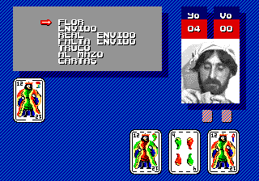
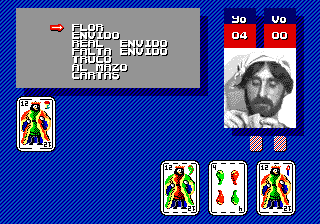

Mega Drive - Homebrews e hacks argentinos
:::. Por B-Mark - O Mega Drive é um dos consoles mais populares até hoje na Argentina, pelo
fato de serem comercializados vários consoles e cartuchos piratas,
obviamente sem a autorização da Sega. O site Sega 16 publicou um artigo sobre a grande quantidade de jogos de
Mega Drive vendidos na provincia de Cordoba.
Esse artigo mostra a criatividade dos Argentinos em modificar jogos
conhecidos, visando uma adaptação a sua cultura e envolvendo tambem a
criação de um jogo proprio, no caso um homebrew.
Hack do FIFA Soccer 95 com a presença de times Argentinos, ausentes no
jogo original, além de contar com a presença de seleções de países e
textos traduzidos do inglês para o espanhol. Esse hack pode ser comparado as alterações feitas nos jogos
International Super Star Soccer para
SNES, e as séries Winning Eleven ou Pro Evolution Soccer para PS2, em que
os times brasileiros substituem as seleções que são bem populares aqui
no Brasil.
Mesmo com essas mudanças não percebi nenhuma diferença em sua jogabilidade
quando ela é comparada com a do jogo original.
Hack do Super Monaco GP em
que os carros de Formula 1 foram substituidos por carros da TC2000
(Turismo Competicion 2000), uma categoria da stock car argentina criada
em 1979 como uma derivada da TC (Turismo Carretera). Enquanto que aqui
no Brasil se usa somente um modelo de carro para as corridas, na
Argentina varios modelos são usados nas corridas. Além
das substituições dos carros, tambem ocorreu uma
substituição das pistas da Formula 1 por pistas
argentinas. O jogo ficou meio estranho porque o carro pilotado pelo
jogador não se move. Isso acontece porque no jogo original a
visão é de dentro do carro.
 

Homebrew do jogo de truco, um jogo de cartas criado na Espanha e que possui
grande popularidade na America do Sul. O jogo, apesar de simples, possui vozes e a imagem digitalizada de um
jogador de Truco.
Acesse o Trombone e comente sobre essa matéria!


Em 90/91 mais ou menos, a Sega ganhou da Tecmo a oportunidade de fazer umas versões do Ninja Gaiden para os seus consoles. Essa chance é comparável ao que Deus fez quando deu o mundo para Adão.